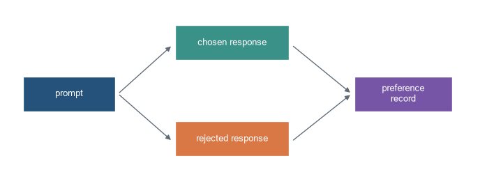
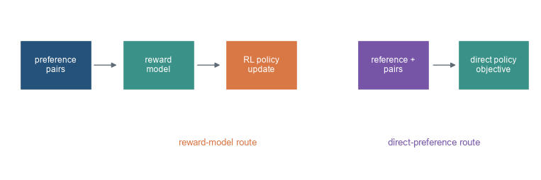
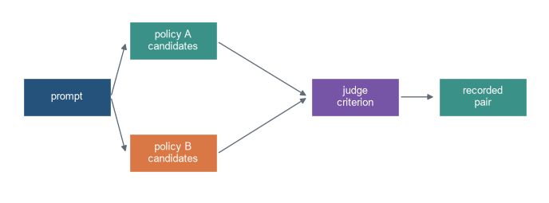
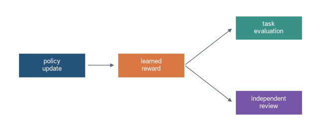

Learning from comparisons between candidate responses
Chapter orientation
Why this chapter matters
Instruction tuning learns to reproduce a demonstrated response. Preference optimisation uses comparisons: for a shared prompt, one candidate response is marked preferred to another. The data therefore express a relative judgement, not a single token-level target. Training methods use those comparisons to change the probability assigned to preferred and rejected responses.
The comparison is only as broad as the judging procedure and prompt distribution. A preferred response can still be false, incomplete, biased, unsafe in another setting, or preferred for a reason that is not documented. This chapter explains reward-model pipelines and direct preference methods, their data requirements, and their failure modes. Chapter 31 turns to parameter-efficient adaptation.
Learning objectives
By the end of this chapter, you should be able to:
distinguish demonstrations, scalar ratings, and pairwise preferences;
define prompt, chosen response, rejected response, judge, and comparison policy;
explain the Bradley-Terry reward-model likelihood;
distinguish reward-model-plus-RL pipelines from direct preference optimisation;
calculate a toy pairwise preference probability;
identify preference-data quality, ambiguity, and reward-hacking risks; and
specify an evaluation and audit record for a preference-optimised model.
Running pair
The same prompt receives two candidate answers. A judge prefers the chosen answer according to a stated criterion. The dataset should retain both candidates, the prompt, the criterion, and how the judgement was obtained.
Code
import numpy as npimport matplotlib.pyplot as pltfrom matplotlib.patches import Rectangle, FancyArrowPatchplt.style.use("seaborn-v0_8-whitegrid")blue,teal,orange,purple,grey="#24527a","#3a9188","#d97745","#7655a6","#5f6b76"fig,ax=plt.subplots(figsize=(9,3.5)); ax.axis("off")items=[(.3,1.45,1.7,.58,"prompt",blue),(3.1,2.3,2.1,.58,"chosen response",teal),(3.1,.7,2.1,.58,"rejected response",orange),(6.4,1.45,1.8,.58,"preference\nrecord",purple)]for x,y,w,h,label,c in items: ax.add_patch(Rectangle((x,y),w,h,facecolor=c,edgecolor="white")); ax.text(x+w/2,y+h/2,label,ha="center",va="center",color="white")for a,b in [((2.05,1.74),(3.05,2.55)),((2.05,1.74),(3.05,.95)),((5.25,2.55),(6.35,1.74)),((5.25,.95),(6.35,1.74))]: ax.add_patch(FancyArrowPatch(a,b,arrowstyle="-|>",color=grey,mutation_scale=11))ax.set_xlim(0,8.6); ax.set_ylim(.2,3.2); plt.show()

Figure 31.1: Preference data compare a chosen and rejected response for the same prompt under a declared judging procedure.
Preference optimisation. Adaptation from comparisons between candidate responses to a shared prompt. It may use a reward model or a direct objective, but its claim remains tied to the judging process, candidate distribution, and reference policy.
Level 1 - Intuition
Comparisons add a different kind of supervision
For an instruction such as “summarise this report”, two responses can both be grammatical and relevant while one is judged clearer, more complete, or better supported. A pairwise label records that relative judgement. It does not require the preferred response to be perfect, and it does not state how large the difference is unless the data include that information.
Preference datasets can be created by people, expert judges, rule-based procedures, or model-based judges. The source matters because it defines what the label represents. A preference for a concise answer differs from a preference for a medically accurate answer; an aggregate label can conceal disagreement among judges or a criterion that favours stylistic features over evidence.
Code
pair={"prompt":"Summarise the record","chosen":"States the evidence and limit","rejected":"Adds unsupported detail","criterion":"support and relevance"}for key,value in pair.items(): print(key+":",value)
prompt: Summarise the record
chosen: States the evidence and limit
rejected: Adds unsupported detail
criterion: support and relevance
Preference learning does not replace evaluation
Optimising against comparisons can make a model more likely to produce responses similar to those preferred in training. It cannot show that the judging distribution matches future users, that the preferred response is factually correct, or that a system is safe under tool use. A model can learn to exploit regularities in a reward signal: polished wording, disclaimers, or length may receive positive labels even when the answer is not useful.
The relevant question is therefore specific: preferred by whom, for which prompts, under which instructions, using what information, and compared with what alternatives? Without this record, “aligned with preferences” has no operational meaning.
Level 2 - Pairwise models
A reward model turns responses into scores
A reward model assigns a scalar (r(x,y)) to a prompt (x) and response (y). Under a Bradley-Terry model, the probability that chosen response (y^+) is preferred to rejected response (y^-) is
[ P(y^+ y-x)=(r(x,y+)-r(x,y^-)). ]
Training raises this probability for observed comparisons. Only score differences matter: adding the same constant to both rewards leaves the pairwise probability unchanged.
Figure 31.2: A Bradley-Terry preference probability depends on the difference between chosen and rejected reward scores.
Reward scores are not calibrated measures of truth or social value. They are learned predictors of the comparison labels under the model and data used. A high reward can be useful for selecting among candidates, but it requires independent tests for reward hacking, distribution shift, and disagreement with the intended criterion.
Two main training routes
One route trains a reward model, then uses reinforcement learning to optimise a policy while constraining it to remain near a reference model. The reference constraint limits uncontrolled changes, but it does not make the learned reward correct. Another route directly optimises the policy with chosen-rejected pairs and a reference policy, avoiding an explicit separate reward-model optimisation. Direct preference optimisation (DPO) is one such formulation (Rafailov et al. 2023).
Code
fig,ax=plt.subplots(figsize=(10,3.2)); ax.axis("off")for x,label,c in [(.25,"preference\npairs",blue),(2.2,"reward\nmodel",teal),(4.15,"RL policy\nupdate",orange),(6.65,"reference +\npairs",purple),(8.55,"direct policy\nobjective",teal)]: ax.add_patch(Rectangle((x,1.25),1.35,.62,facecolor=c,edgecolor="white")); ax.text(x+.675,1.56,label,ha="center",va="center",color="white",fontsize=9)for x in [1.62,3.58,8.05]: ax.add_patch(FancyArrowPatch((x,1.56),(x+.5,1.56),arrowstyle="-|>",color=grey,mutation_scale=11))ax.text(4.0,.55,"reward-model route",ha="center",color=orange); ax.text(8.1,.55,"direct-preference route",ha="center",color=purple); ax.set_xlim(0,10); ax.set_ylim(.2,2.3); plt.show()

Figure 31.3: Preference optimisation can use a learned reward followed by policy optimisation or a direct objective that compares policy probabilities for chosen and rejected responses.
Level 3 - Objective and data boundaries
Direct preference objectives compare log probabilities
For each pair, DPO encourages the tuned policy to increase the relative log probability of the chosen response over the rejected response, compared with a reference policy. The reference is commonly the supervised model before preference training. The exact objective includes a temperature-like coefficient that sets the strength of the change. It is a policy objective built from pairwise labels, not a claim that the chosen sequence is the only correct continuation.
Code
logp_chosen,logp_rejected=-2.0,-3.1logref_chosen,logref_rejected=-2.2,-2.8relative=(logp_chosen-logp_rejected)-(logref_chosen-logref_rejected)print("relative chosen advantage over reference:",round(relative,3))
relative chosen advantage over reference: 0.5
Preference data must define response boundaries. If responses have very different lengths, raw sequence log probability can depend strongly on token count. If one response is truncated or contains hidden template text, the pair no longer represents the intended comparison. The dataset should store tokenised lengths, stop reasons, template version, candidate-generation method, and whether judges saw sources or tool outputs.
Judge disagreement is evidence, not noise to hide
When several judges compare a pair, disagreement can reveal ambiguous prompts, competing criteria, poor candidate quality, or a population difference that an aggregate majority label conceals. A pipeline may aggregate labels, retain ties, collect rationales, or route sensitive cases to experts. The choice affects the supervised signal and should be reported.
Code
votes=np.array([1,1,0,1,0]) # 1 means candidate A preferredprint("A share:",votes.mean(),"disagreement rate:",min(votes.mean(),1-votes.mean()))
A share: 0.6 disagreement rate: 0.4
Candidate generation sets the comparison problem
Preference labels are collected over candidates that a pipeline has made available. If all candidates are poor, the chosen response may still be unsuitable. If candidates differ mainly in length or formatting, judges can learn a superficial comparison rule. If candidates come from one model and decoding policy, a reward model can be poorly calibrated for candidates produced after the policy changes. The pair generator, temperature, length limit, constraints, and filtering rules therefore belong in the dataset record.
Candidate diversity can be useful when it exposes meaningful trade-offs, such as a concise answer versus a detailed answer grounded in different evidence. It can be unhelpful when it creates near-duplicate pairs that add labels without expanding the decision boundary. Sampling pairs should be audited for prompt overlap, candidate similarity, response length, source availability, and the reasons judges were asked to compare them.
Code
fig,ax=plt.subplots(figsize=(9,3.2)); ax.axis("off")for x,y,label,c in [(.25,1.35,"prompt",blue),(2.0,2.2,"policy A\ncandidates",teal),(2.0,.5,"policy B\ncandidates",orange),(5.0,1.35,"judge\ncriterion",purple),(7.1,1.35,"recorded\npair",teal)]: ax.add_patch(Rectangle((x,y),1.45,.58,facecolor=c,edgecolor="white")); ax.text(x+.725,y+.29,label,ha="center",va="center",color="white")for a,b in [((1.7,1.64),(1.95,2.48)),((1.7,1.64),(1.95,.78)),((3.45,2.48),(4.95,1.64)),((3.45,.78),(4.95,1.64)),((6.45,1.64),(7.05,1.64))]: ax.add_patch(FancyArrowPatch(a,b,arrowstyle="-|>",color=grey,mutation_scale=11))ax.set_xlim(0,8.8); ax.set_ylim(.15,3); plt.show()

Figure 31.4: A preference label depends on the candidates presented to judges; changing candidate generation changes the comparison distribution.
Preference optimisation needs regression checks
A preferred-response objective can change refusal behaviour, verbosity, calibration language, code style, and the probability of answers outside the labelled prompt categories. Model selection should include a fixed suite of target preferences and retained tasks, with the same template and decoding policy for the reference and tuned checkpoints. The comparison should state whether the evaluation judges are independent from the preference-data judges and whether test prompts were held out before candidate generation.
Reward scores should not be used as the only selection metric because the policy has been optimised against them. A reward model can rank its own training distribution well while disagreeing with a new judge population or task-grounded evaluator. The separation between training signal and independent evaluation is a basic protection against selecting the checkpoint that best exploits the available proxy.
Preference labels need a population and a decision rule
Judges do not supply preferences in the abstract. They evaluate candidates under instructions, time constraints, information access, and a particular population of prompts. Expert review can be needed when an answer requires domain knowledge; general raters can still be appropriate for readability or instruction compliance if that is the criterion. The report should name the criterion rather than treating all labels as one measure of helpfulness.
Pair construction also determines whether a preference is informative. Pairs that differ in only punctuation can estimate a narrow formatting preference. Pairs with one malformed candidate can make the task trivial. Difficult pairs near a decision boundary can reveal disagreement and evaluator limitations, but they also require a policy for ties and uncertainty. Keeping the unaggregated labels supports later analysis of those differences.
Code
pair_types={"trivial malformed alternative":40,"format trade-off":35,"evidence trade-off":25}print(pair_types)print("A preference dataset should report how its pair types were sampled and judged.")
{'trivial malformed alternative': 40, 'format trade-off': 35, 'evidence trade-off': 25}
A preference dataset should report how its pair types were sampled and judged.
Level 4 - Audit and failure modes
Reward hacking is an empirical failure mode
Optimising a learned reward can produce outputs that score well under the reward model while failing the intended task. A response may use confident language, repeat a judging rubric, become excessively long, or exploit a blind spot in labelled comparisons. This is not a hypothetical concern that can be dismissed by a high mean reward; it is a reason to evaluate on fresh prompts, new candidate sources, adversarial cases, and human or task-grounded criteria independent of the training reward.
Code
fig,ax=plt.subplots(figsize=(8.7,3.4)); ax.axis("off")for x,y,label,c in [(.3,1.45,"policy\nupdate",blue),(2.45,1.45,"learned\nreward",orange),(5.0,2.35,"task\nevaluation",teal),(5.0,.55,"independent\nreview",purple)]: ax.add_patch(Rectangle((x,y),1.45,.58,facecolor=c,edgecolor="white")); ax.text(x+.725,y+.29,label,ha="center",va="center",color="white")for a,b in [((1.78,1.74),(2.4,1.74)),((3.9,1.74),(4.95,2.64)),((3.9,1.74),(4.95,.84))]: ax.add_patch(FancyArrowPatch(a,b,arrowstyle="-|>",color=grey,mutation_scale=11))ax.set_xlim(0,7); ax.set_ylim(.2,3.2); plt.show()

Figure 31.5: A preference-optimised policy can improve its learned reward while requiring separate checks against independent task and human criteria.
A preference record supports interpretation
An audit should retain base and reference checkpoints; prompt and template versions; candidate-generation policy and decoding settings; chosen and rejected token sequences; judge population, instructions, information access, and aggregation rule; reward-model architecture and validation where used; objective parameters; training schedule; target and regression evaluations; and representative disagreements or failures. This record allows a reviewer to identify whether a change came from candidates, judges, the objective, or the serving interface.
Code
record={"reference":"instruction checkpoint","pairs":"versioned","judges":"documented instructions","objective":"DPO-like","evaluation":"independent"}assert {"reference","pairs","judges","objective","evaluation"} <=set(record)print("preference audit record complete")
preference audit record complete
Common misconceptions
A preference label says the chosen answer is correct. It records a relative judgement under a particular procedure.
Reward scores are calibrated truth scores. They estimate comparison labels under a trained reward model.
Direct preference optimisation needs no reference behaviour. Standard direct objectives define change relative to a reference policy.
More pairwise labels remove ambiguity. They can reproduce a narrow judge distribution or unresolved disagreement.
A higher learned reward proves the model is safer. Independent safety and task tests are required.
Preference optimisation replaces instruction tuning. It usually starts from an instruction-following reference model.
Exercises
Distinguish a demonstration from a chosen-rejected comparison.
Calculate a Bradley-Terry preference probability from two rewards.
Show why adding a constant to both rewards changes no pairwise probability.
Draw the reward-model-plus-policy route and a direct-preference route.
Compute a relative log-probability advantage over a reference policy.
List fields needed to interpret a preference pair.
Explain why candidate-generation settings can affect preference labels.
Design a disagreement record for several judges.
Give an example of a reward-hacking pattern.
Explain why a high reward needs independent evaluation.
State how response-length differences can affect sequence comparisons.
Compare a tie policy with forced binary labels.
Specify a regression evaluation after preference training.
Identify a sensitive task requiring a stated judge information policy.
List metadata needed to reproduce a DPO-like run.
Identify the chapter that treats parameter-efficient fine-tuning.
Summary
Preference optimisation learns from comparisons between responses for a shared prompt. Reward-model pipelines and direct objectives both depend on the candidate distribution, judging procedure, response boundaries, reference policy, and independent evaluation. A learned reward or preference score is evidence about that comparison process, not a general certificate of truth, safety, or usefulness.
Chapter 31 compares full updates with parameter-efficient adaptation methods such as LoRA.
Looking ahead
Preference optimisation defines an adaptation objective, but the objective can update all model weights or only a selected subset. Chapter 31 compares those implementation and deployment choices.
Further reading
Learning from human preferences is introduced by Christiano et al. (2017). DPO is developed by Rafailov et al. (2023). InstructGPT documents a reward-model and policy-optimisation alignment pipeline (Ouyang et al. 2022).
Christiano, Paul F., Jan Leike, Tom B. Brown, Miljan Martic, Shane Legg, and Dario Amodei. 2017. “Deep Reinforcement Learning from Human Preferences.” In Advances in Neural Information Processing Systems. Vol. 30. https://arxiv.org/abs/1706.03741.
Ouyang, Long, Jeffrey Wu, Xu Jiang, Diogo Almeida, Carroll Wainwright, Pamela Mishkin, Chong Zhang, et al. 2022. “Training Language Models to Follow Instructions with Human Feedback.”Advances in Neural Information Processing Systems 35: 27730–44. https://arxiv.org/abs/2203.02155.
Rafailov, Rafael, Archit Sharma, Eric Mitchell, Christopher D. Manning, Stefano Ermon, and Chelsea Finn. 2023. “Direct Preference Optimization: Your Language Model Is Secretly a Reward Model.”Advances in Neural Information Processing Systems 36: 53728–41. https://arxiv.org/abs/2305.18290.
Source Code
---title: "Preference Optimisation"subtitle: "Learning from comparisons between candidate responses"---## Chapter orientation### Why this chapter mattersInstruction tuning learns to reproduce a demonstrated response. Preference optimisation uses comparisons: for a shared prompt, one candidate response is marked preferred to another. The data therefore express a relative judgement, not a single token-level target. Training methods use those comparisons to change the probability assigned to preferred and rejected responses.The comparison is only as broad as the judging procedure and prompt distribution. A preferred response can still be false, incomplete, biased, unsafe in another setting, or preferred for a reason that is not documented. This chapter explains reward-model pipelines and direct preference methods, their data requirements, and their failure modes. Chapter 31 turns to parameter-efficient adaptation.### Learning objectivesBy the end of this chapter, you should be able to:- distinguish demonstrations, scalar ratings, and pairwise preferences;- define prompt, chosen response, rejected response, judge, and comparison policy;- explain the Bradley-Terry reward-model likelihood;- distinguish reward-model-plus-RL pipelines from direct preference optimisation;- calculate a toy pairwise preference probability;- identify preference-data quality, ambiguity, and reward-hacking risks; and- specify an evaluation and audit record for a preference-optimised model.### Running pairThe same prompt receives two candidate answers. A judge prefers the chosen answer according to a stated criterion. The dataset should retain both candidates, the prompt, the criterion, and how the judgement was obtained.```{python}#| label: fig-preference-pair#| fig-cap: "Preference data compare a chosen and rejected response for the same prompt under a declared judging procedure."#| fig-alt: "A prompt box branches to chosen and rejected response boxes, which feed into a recorded preference label."import numpy as npimport matplotlib.pyplot as pltfrom matplotlib.patches import Rectangle, FancyArrowPatchplt.style.use("seaborn-v0_8-whitegrid")blue,teal,orange,purple,grey="#24527a","#3a9188","#d97745","#7655a6","#5f6b76"fig,ax=plt.subplots(figsize=(9,3.5)); ax.axis("off")items=[(.3,1.45,1.7,.58,"prompt",blue),(3.1,2.3,2.1,.58,"chosen response",teal),(3.1,.7,2.1,.58,"rejected response",orange),(6.4,1.45,1.8,.58,"preference\nrecord",purple)]for x,y,w,h,label,c in items: ax.add_patch(Rectangle((x,y),w,h,facecolor=c,edgecolor="white")); ax.text(x+w/2,y+h/2,label,ha="center",va="center",color="white")for a,b in [((2.05,1.74),(3.05,2.55)),((2.05,1.74),(3.05,.95)),((5.25,2.55),(6.35,1.74)),((5.25,.95),(6.35,1.74))]: ax.add_patch(FancyArrowPatch(a,b,arrowstyle="-|>",color=grey,mutation_scale=11))ax.set_xlim(0,8.6); ax.set_ylim(.2,3.2); plt.show()```::: {.concept-box .concept-core #concept-preference-optimisation data-term="Preference optimisation" data-domain="Large language models"}**Preference optimisation.** Adaptation from comparisons between candidate responses to a shared prompt. It may use a reward model or a direct objective, but its claim remains tied to the judging process, candidate distribution, and reference policy.:::## Level 1 - Intuition### Comparisons add a different kind of supervisionFor an instruction such as “summarise this report”, two responses can both be grammatical and relevant while one is judged clearer, more complete, or better supported. A pairwise label records that relative judgement. It does not require the preferred response to be perfect, and it does not state how large the difference is unless the data include that information.Preference datasets can be created by people, expert judges, rule-based procedures, or model-based judges. The source matters because it defines what the label represents. A preference for a concise answer differs from a preference for a medically accurate answer; an aggregate label can conceal disagreement among judges or a criterion that favours stylistic features over evidence.```{python}pair={"prompt":"Summarise the record","chosen":"States the evidence and limit","rejected":"Adds unsupported detail","criterion":"support and relevance"}for key,value in pair.items(): print(key+":",value)```### Preference learning does not replace evaluationOptimising against comparisons can make a model more likely to produce responses similar to those preferred in training. It cannot show that the judging distribution matches future users, that the preferred response is factually correct, or that a system is safe under tool use. A model can learn to exploit regularities in a reward signal: polished wording, disclaimers, or length may receive positive labels even when the answer is not useful.The relevant question is therefore specific: preferred by whom, for which prompts, under which instructions, using what information, and compared with what alternatives? Without this record, “aligned with preferences” has no operational meaning.## Level 2 - Pairwise models### A reward model turns responses into scoresA reward model assigns a scalar \(r(x,y)\) to a prompt \(x\) and response \(y\). Under a Bradley-Terry model, the probability that chosen response \(y^+\) is preferred to rejected response \(y^-\) is\[P(y^+ \succ y^-\mid x)=\sigma(r(x,y^+)-r(x,y^-)).\]Training raises this probability for observed comparisons. Only score differences matter: adding the same constant to both rewards leaves the pairwise probability unchanged.```{python}def sigmoid(x): return1/(1+np.exp(-x))chosen_reward,rejected_reward=1.4,.3print("preference probability:",round(sigmoid(chosen_reward-rejected_reward),3))``````{python}#| label: fig-reward-difference#| fig-cap: "A Bradley-Terry preference probability depends on the difference between chosen and rejected reward scores."#| fig-alt: "A sigmoid curve plots probability of preferring the chosen response against the reward-score difference."differences=np.linspace(-4,4,200)fig,ax=plt.subplots(figsize=(7.5,4)); ax.plot(differences,sigmoid(differences),color=teal,lw=2.5); ax.axvline(0,color=grey,lw=.8); ax.set_xlabel("chosen reward minus rejected reward"); ax.set_ylabel("preference probability"); ax.set_title("Pairwise preference model"); plt.tight_layout(); plt.show()```Reward scores are not calibrated measures of truth or social value. They are learned predictors of the comparison labels under the model and data used. A high reward can be useful for selecting among candidates, but it requires independent tests for reward hacking, distribution shift, and disagreement with the intended criterion.### Two main training routesOne route trains a reward model, then uses reinforcement learning to optimise a policy while constraining it to remain near a reference model. The reference constraint limits uncontrolled changes, but it does not make the learned reward correct. Another route directly optimises the policy with chosen-rejected pairs and a reference policy, avoiding an explicit separate reward-model optimisation. Direct preference optimisation (DPO) is one such formulation [@rafailov2023direct].```{python}#| label: fig-preference-routes#| fig-cap: "Preference optimisation can use a learned reward followed by policy optimisation or a direct objective that compares policy probabilities for chosen and rejected responses."#| fig-alt: "One flow runs preference pairs to reward model to policy optimisation; another runs pairs and a reference policy directly to a policy objective."fig,ax=plt.subplots(figsize=(10,3.2)); ax.axis("off")for x,label,c in [(.25,"preference\npairs",blue),(2.2,"reward\nmodel",teal),(4.15,"RL policy\nupdate",orange),(6.65,"reference +\npairs",purple),(8.55,"direct policy\nobjective",teal)]: ax.add_patch(Rectangle((x,1.25),1.35,.62,facecolor=c,edgecolor="white")); ax.text(x+.675,1.56,label,ha="center",va="center",color="white",fontsize=9)for x in [1.62,3.58,8.05]: ax.add_patch(FancyArrowPatch((x,1.56),(x+.5,1.56),arrowstyle="-|>",color=grey,mutation_scale=11))ax.text(4.0,.55,"reward-model route",ha="center",color=orange); ax.text(8.1,.55,"direct-preference route",ha="center",color=purple); ax.set_xlim(0,10); ax.set_ylim(.2,2.3); plt.show()```## Level 3 - Objective and data boundaries### Direct preference objectives compare log probabilitiesFor each pair, DPO encourages the tuned policy to increase the relative log probability of the chosen response over the rejected response, compared with a reference policy. The reference is commonly the supervised model before preference training. The exact objective includes a temperature-like coefficient that sets the strength of the change. It is a policy objective built from pairwise labels, not a claim that the chosen sequence is the only correct continuation.```{python}logp_chosen,logp_rejected=-2.0,-3.1logref_chosen,logref_rejected=-2.2,-2.8relative=(logp_chosen-logp_rejected)-(logref_chosen-logref_rejected)print("relative chosen advantage over reference:",round(relative,3))```Preference data must define response boundaries. If responses have very different lengths, raw sequence log probability can depend strongly on token count. If one response is truncated or contains hidden template text, the pair no longer represents the intended comparison. The dataset should store tokenised lengths, stop reasons, template version, candidate-generation method, and whether judges saw sources or tool outputs.### Judge disagreement is evidence, not noise to hideWhen several judges compare a pair, disagreement can reveal ambiguous prompts, competing criteria, poor candidate quality, or a population difference that an aggregate majority label conceals. A pipeline may aggregate labels, retain ties, collect rationales, or route sensitive cases to experts. The choice affects the supervised signal and should be reported.```{python}votes=np.array([1,1,0,1,0]) # 1 means candidate A preferredprint("A share:",votes.mean(),"disagreement rate:",min(votes.mean(),1-votes.mean()))```### Candidate generation sets the comparison problemPreference labels are collected over candidates that a pipeline has made available. If all candidates are poor, the chosen response may still be unsuitable. If candidates differ mainly in length or formatting, judges can learn a superficial comparison rule. If candidates come from one model and decoding policy, a reward model can be poorly calibrated for candidates produced after the policy changes. The pair generator, temperature, length limit, constraints, and filtering rules therefore belong in the dataset record.Candidate diversity can be useful when it exposes meaningful trade-offs, such as a concise answer versus a detailed answer grounded in different evidence. It can be unhelpful when it creates near-duplicate pairs that add labels without expanding the decision boundary. Sampling pairs should be audited for prompt overlap, candidate similarity, response length, source availability, and the reasons judges were asked to compare them.```{python}#| label: fig-candidate-boundary#| fig-cap: "A preference label depends on the candidates presented to judges; changing candidate generation changes the comparison distribution."#| fig-alt: "A prompt feeds through two candidate-generation policies into different pairs for the same judge criterion."fig,ax=plt.subplots(figsize=(9,3.2)); ax.axis("off")for x,y,label,c in [(.25,1.35,"prompt",blue),(2.0,2.2,"policy A\ncandidates",teal),(2.0,.5,"policy B\ncandidates",orange),(5.0,1.35,"judge\ncriterion",purple),(7.1,1.35,"recorded\npair",teal)]: ax.add_patch(Rectangle((x,y),1.45,.58,facecolor=c,edgecolor="white")); ax.text(x+.725,y+.29,label,ha="center",va="center",color="white")for a,b in [((1.7,1.64),(1.95,2.48)),((1.7,1.64),(1.95,.78)),((3.45,2.48),(4.95,1.64)),((3.45,.78),(4.95,1.64)),((6.45,1.64),(7.05,1.64))]: ax.add_patch(FancyArrowPatch(a,b,arrowstyle="-|>",color=grey,mutation_scale=11))ax.set_xlim(0,8.8); ax.set_ylim(.15,3); plt.show()```### Preference optimisation needs regression checksA preferred-response objective can change refusal behaviour, verbosity, calibration language, code style, and the probability of answers outside the labelled prompt categories. Model selection should include a fixed suite of target preferences and retained tasks, with the same template and decoding policy for the reference and tuned checkpoints. The comparison should state whether the evaluation judges are independent from the preference-data judges and whether test prompts were held out before candidate generation.Reward scores should not be used as the only selection metric because the policy has been optimised against them. A reward model can rank its own training distribution well while disagreeing with a new judge population or task-grounded evaluator. The separation between training signal and independent evaluation is a basic protection against selecting the checkpoint that best exploits the available proxy.### Preference labels need a population and a decision ruleJudges do not supply preferences in the abstract. They evaluate candidates under instructions, time constraints, information access, and a particular population of prompts. Expert review can be needed when an answer requires domain knowledge; general raters can still be appropriate for readability or instruction compliance if that is the criterion. The report should name the criterion rather than treating all labels as one measure of helpfulness.Pair construction also determines whether a preference is informative. Pairs that differ in only punctuation can estimate a narrow formatting preference. Pairs with one malformed candidate can make the task trivial. Difficult pairs near a decision boundary can reveal disagreement and evaluator limitations, but they also require a policy for ties and uncertainty. Keeping the unaggregated labels supports later analysis of those differences.```{python}pair_types={"trivial malformed alternative":40,"format trade-off":35,"evidence trade-off":25}print(pair_types)print("A preference dataset should report how its pair types were sampled and judged.")```## Level 4 - Audit and failure modes### Reward hacking is an empirical failure modeOptimising a learned reward can produce outputs that score well under the reward model while failing the intended task. A response may use confident language, repeat a judging rubric, become excessively long, or exploit a blind spot in labelled comparisons. This is not a hypothetical concern that can be dismissed by a high mean reward; it is a reason to evaluate on fresh prompts, new candidate sources, adversarial cases, and human or task-grounded criteria independent of the training reward.```{python}#| label: fig-reward-audit#| fig-cap: "A preference-optimised policy can improve its learned reward while requiring separate checks against independent task and human criteria."#| fig-alt: "A policy update leads to high learned reward, then branches to independent task evaluation and held-out human review."fig,ax=plt.subplots(figsize=(8.7,3.4)); ax.axis("off")for x,y,label,c in [(.3,1.45,"policy\nupdate",blue),(2.45,1.45,"learned\nreward",orange),(5.0,2.35,"task\nevaluation",teal),(5.0,.55,"independent\nreview",purple)]: ax.add_patch(Rectangle((x,y),1.45,.58,facecolor=c,edgecolor="white")); ax.text(x+.725,y+.29,label,ha="center",va="center",color="white")for a,b in [((1.78,1.74),(2.4,1.74)),((3.9,1.74),(4.95,2.64)),((3.9,1.74),(4.95,.84))]: ax.add_patch(FancyArrowPatch(a,b,arrowstyle="-|>",color=grey,mutation_scale=11))ax.set_xlim(0,7); ax.set_ylim(.2,3.2); plt.show()```### A preference record supports interpretationAn audit should retain base and reference checkpoints; prompt and template versions; candidate-generation policy and decoding settings; chosen and rejected token sequences; judge population, instructions, information access, and aggregation rule; reward-model architecture and validation where used; objective parameters; training schedule; target and regression evaluations; and representative disagreements or failures. This record allows a reviewer to identify whether a change came from candidates, judges, the objective, or the serving interface.```{python}record={"reference":"instruction checkpoint","pairs":"versioned","judges":"documented instructions","objective":"DPO-like","evaluation":"independent"}assert {"reference","pairs","judges","objective","evaluation"} <=set(record)print("preference audit record complete")```## Common misconceptions- **A preference label says the chosen answer is correct.** It records a relative judgement under a particular procedure.- **Reward scores are calibrated truth scores.** They estimate comparison labels under a trained reward model.- **Direct preference optimisation needs no reference behaviour.** Standard direct objectives define change relative to a reference policy.- **More pairwise labels remove ambiguity.** They can reproduce a narrow judge distribution or unresolved disagreement.- **A higher learned reward proves the model is safer.** Independent safety and task tests are required.- **Preference optimisation replaces instruction tuning.** It usually starts from an instruction-following reference model.## Exercises1. Distinguish a demonstration from a chosen-rejected comparison.2. Calculate a Bradley-Terry preference probability from two rewards.3. Show why adding a constant to both rewards changes no pairwise probability.4. Draw the reward-model-plus-policy route and a direct-preference route.5. Compute a relative log-probability advantage over a reference policy.6. List fields needed to interpret a preference pair.7. Explain why candidate-generation settings can affect preference labels.8. Design a disagreement record for several judges.9. Give an example of a reward-hacking pattern.10. Explain why a high reward needs independent evaluation.11. State how response-length differences can affect sequence comparisons.12. Compare a tie policy with forced binary labels.13. Specify a regression evaluation after preference training.14. Identify a sensitive task requiring a stated judge information policy.15. List metadata needed to reproduce a DPO-like run.16. Identify the chapter that treats parameter-efficient fine-tuning.## SummaryPreference optimisation learns from comparisons between responses for a shared prompt. Reward-model pipelines and direct objectives both depend on the candidate distribution, judging procedure, response boundaries, reference policy, and independent evaluation. A learned reward or preference score is evidence about that comparison process, not a general certificate of truth, safety, or usefulness.[Chapter 31](31-full-and-parameter-efficient-fine-tuning.qmd) compares full updates with parameter-efficient adaptation methods such as LoRA.## Looking aheadPreference optimisation defines an adaptation objective, but the objective can update all model weights or only a selected subset. [Chapter 31](31-full-and-parameter-efficient-fine-tuning.qmd) compares those implementation and deployment choices.## Further readingLearning from human preferences is introduced by @christiano2017deep. DPO is developed by @rafailov2023direct. InstructGPT documents a reward-model and policy-optimisation alignment pipeline [@ouyang2022training].